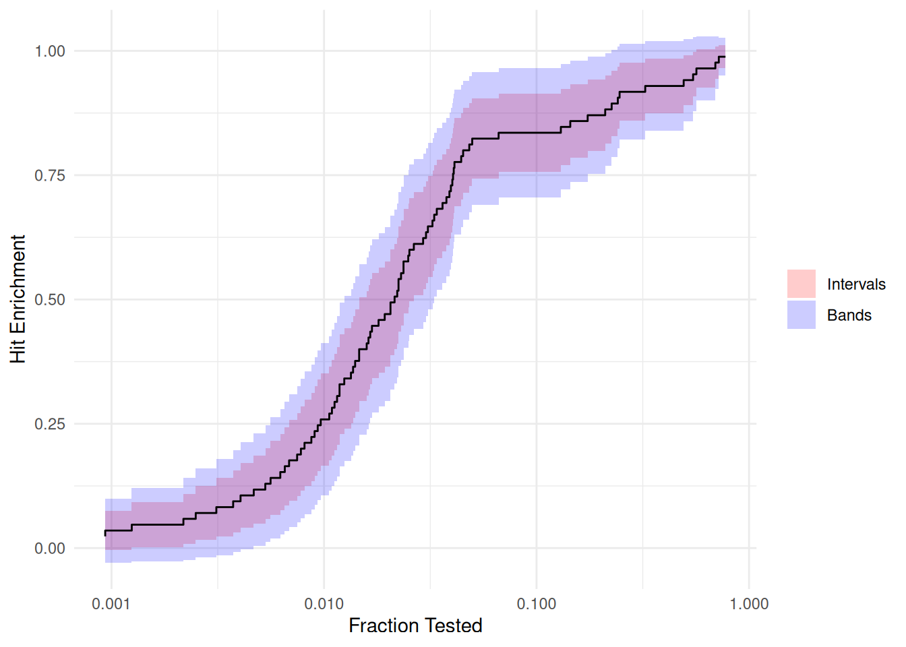
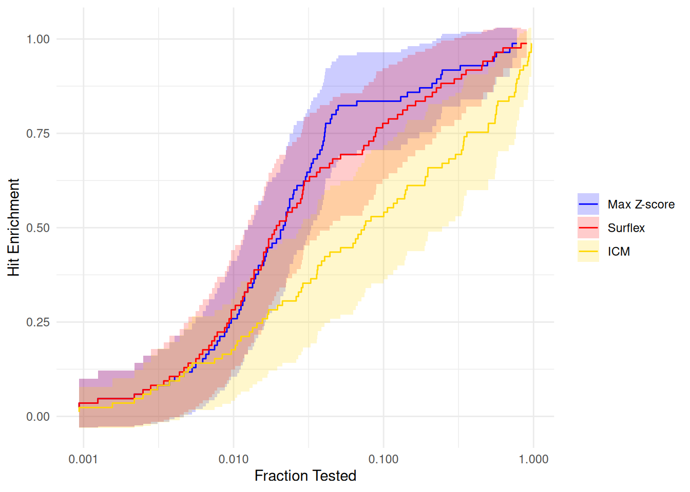

library(deli)
library(ggplot2)
theme_set(theme_minimal())
# The hit enrichment curves are step functions, so the shaded regions have to
# step with them. The fraction tested decreases as the score threshold rises,
# so each interval takes its limits from the right-hand endpoint. This returns
# the corners of the resulting stepped region, ordered along the x axis.
step_band <- function(x, lower, upper) {
ord <- order(x)
interval <- seq_len(length(x) - 1)
corner <- as.vector(rbind(interval, interval + 1))
value <- rep(interval + 1, each = 2)
data.frame(
x = x[ord][corner],
lower = lower[ord][value],
upper = upper[ord][value]
)
}Note
This article is translated from the Ash & Hughes-Oliver (2022): Confidence Bands for Hit Enrichment Curves example in the documentation of delicatessen, deli’s Python counterpart.
The following is a replication of the applied analysis of Ash & Hughes-Oliver (2022), which uses data from Empereur-Mot et al. (2016). The authors discuss estimation of the ‘hit enrichment curve’, which is a function commonly used to summarize effectiveness of a virtual drug screening campaign. In the example, the authors are focused on estimating the hit enrichment curve for the protein regulating gene peroxisome proliferator-activated receptor gamma (PPARg). This was done using three different docking methods: Surflex-dock, ICM, and Vina. To compare the hit enrichment curves from these different docking methods, the authors discuss the use of confidence bands. The original materials for the paper can be found HERE.
Here, we will show how deli can be used to construct confidence bands in the context of hit enrichment curves.
Loading Data
d <- pparg
# Extracting relevant data for hit enrichment curve estimation
active <- d$surf_actives # Outcome variable for hit enrichment
x_mxz <- d$maxz_scores # Max Z-score docking
x_srf <- d$surf_scores # Surflex-docking
x_icm <- d$icm_scores # ICM dockingEmpirical Distribution Function
As in Ash & Hughes-Oliver, we are interested in estimating the hit enrichment curve. They define the hit enrichment curve at the point s as the recall curve divided by the percent-captured curve. Here, s is a set of scores the correspond to the belief that a ligand is active. For a given threshold s, the estimator of the hit enrichment curve is \hat{H}(s) = \frac{\hat{\beta}(s)}{\hat{\rho}(s)} where \hat{\beta}(s) = \frac{\sum_{i=1}^n A_i I(S_i \ge s)}{\sum_{i=1}^n A_i}, \hat{\rho}(s) = \frac{1}{n} \sum_{i=1}^n I(S_i \ge s), A_i denotes a ‘hit’ or the activity value, and S_i denotes the active ligand score. To plot the estimated hit enrichment curve, we will plot the ordered pairs (\rho(s), \beta(s)) for s.
The estimating function for these parameters are \psi(O_i; \beta(s)) = A_i \left( I(S_i \ge s) - \beta(s) \right) \psi(O_i; \beta(s)) = I(S_i \ge s) - \rho(s) respectively. However, we are interested in plotting the complete curve (not only one point). To estimate this function, let s_k \in \{s_1, ..., s_K\} denote the set of unique observed values of S_i where A_i = 1 in the data. Here, the stacked estimating functions expand to the number K. Note the the number of estimating functions (and parameters) is now a function of n (via K). This seemingly subtle change has important implications for inference. Specifically, the theory from Stefanski & Boos 2002 is no longer adequate. Instead, we need an extension. See Kosorok 2008 for those details.
We will start by estimating the cumulative distribution function for Max Z-score docking.
Estimating equations for the EDF
psi_edf <- function(theta) {
# Separating parameters into subsets
beta <- theta[1:n_unique_mxz]
rho <- theta[(n_unique_mxz + 1):(n_unique_mxz * 2)]
# Indicator matrix: each row is a unique value, each column is an observation
indicator_matrix <- outer(unique_mxz, x_mxz, FUN = "<=")
indicator_matrix <- indicator_matrix * 1 # Convert logical to integer
# Recall fractions at all ranks, then scale each observation by its activity
ef_hedf <- sweep(indicator_matrix - beta, 2, active, "*")
# Fraction tests at all ranks
ef_fedf <- indicator_matrix - rho
# Stacking the estimating functions
rbind(ef_hedf, ef_fedf)
}Estimation
# Initial values
init_vals <- c(
seq(0.99, 0.01, length.out = n_unique_mxz),
seq(0.99, 0.01, length.out = n_unique_mxz)
)
# M-Estimation with the Levenberg-Marquardt solver, matching the reference
# analysis
estr <- m_estimate(psi_edf, init = init_vals, solver = "lm")Confidence Bands
While we could present confidence intervals in our figure, these can be misleading when presenting functions. Confidence intervals claim to cover the parameter at the advertised rate. As such, coverage of a function will be below that level. Therefore, when presenting functions we should instead consider presenting confidence bands. Confidence bands modify the critical value so that a set of modified confidence intervals have coverage at the advertised rate. The most familiar method is the Bonferroni correction. However, the Bonferroni correction can be overly conservative (and is not appropriate to apply in this setting). Instead, we use the sup-t method as described in the referenced paper. See Zivich et al. (2025) for further details.
# Confidence bands using sup-t method
cbands <- confidence_bands(estr, method = "supt", seed = 2101101)
cbands <- cbands[1:n_unique_mxz, ]To illustrate the difference between the two methods to compute confidence regions, we will also compute the confidence intervals here.
# Confidence intervals
cints <- confint(estr)
cints <- cints[1:n_unique_mxz, ]Plotting the hit enrichment curve
Now we will recreate the plot in Figure 5 of Ash & Hughes-Oliver.
# Extract rho values (fraction tested)
x_vals <- estr@theta[(n_unique_mxz + 1):(n_unique_mxz * 2)]
# Extract beta values (hit enrichment)
y_vals <- estr@theta[1:n_unique_mxz]
curve_mxz <- data.frame(x = x_vals, y = y_vals)
# Confidence intervals (red shading) and confidence bands (blue shading)
regions_mxz <- rbind(
cbind(step_band(x_vals, cints[, 1], cints[, 2]), region = "Intervals"),
cbind(step_band(x_vals, cbands[, 1], cbands[, 2]), region = "Bands")
)
regions_mxz$region <- factor(
regions_mxz$region,
levels = c("Intervals", "Bands")
)
ggplot(curve_mxz, aes(x = x, y = y)) +
geom_ribbon(
data = regions_mxz,
aes(x = x, ymin = lower, ymax = upper, fill = region),
inherit.aes = FALSE,
alpha = 0.2
) +
geom_step(direction = "vh") +
scale_fill_manual(values = c(Intervals = "red", Bands = "blue")) +
scale_x_log10() +
labs(x = "Fraction Tested", y = "Hit Enrichment", fill = NULL)
The estimated hit enrichment curve is comparable to the one reported in Figure 5 of the paper. There might be slight differences due to minor differences in estimators (we ignore ties) and the sup-t confidence bands rely on a resampling process (so there can be Monte-Carlo errors).
Importantly, we see that the confidence intervals are much narrower than the confidence bands. This illustrates how the confidence intervals can be misleading when making inferences for functions. Hence why focusing on the confidence bands in settings like this is preferred for statistical inference.
Now let’s compute and plot the functions for the three methods described in the paper and their corresponding confidence bands.
Comparing Docking Methods
Storing Max Z-score results
# Storing outputs from max Z-scores
beta_mxz <- estr@theta[1:n_unique_mxz]
rho_mxz <- estr@theta[(n_unique_mxz + 1):(n_unique_mxz * 2)]
cb_mxz <- cbandsSurflex docking
# Computing for Surflex method
unique_srf <- sort(unique(x_srf[active == 1]))[-1]
n_unique_srf <- length(unique_srf)
psi_edf_srf <- function(theta) {
# Separating parameters into subsets
beta <- theta[1:n_unique_srf]
rho <- theta[(n_unique_srf + 1):(n_unique_srf * 2)]
# Indicator matrix
indicator_matrix <- outer(unique_srf, x_srf, FUN = "<=") * 1
# Recall fractions at all ranks, then scale each observation by its activity
ef_hedf <- sweep(indicator_matrix - beta, 2, active, "*")
# Fraction tests at all ranks
ef_fedf <- indicator_matrix - rho
# Stacking the estimating functions
rbind(ef_hedf, ef_fedf)
}
# Estimation
init_vals <- c(
seq(0.99, 0.01, length.out = n_unique_srf),
seq(0.99, 0.01, length.out = n_unique_srf)
)
estr <- m_estimate(psi_edf_srf, init = init_vals, solver = "lm")
# Confidence bands computation
cbands <- confidence_bands(estr, method = "supt", seed = 2101101)
cbands <- cbands[1:n_unique_srf, ]
# Storing outputs
beta_srf <- estr@theta[1:n_unique_srf]
rho_srf <- estr@theta[(n_unique_srf + 1):(n_unique_srf * 2)]
cb_srf <- cbandsICM docking
# Computing for ICM method
unique_icm <- sort(unique(x_icm[active == 1]))[-1]
n_unique_icm <- length(unique_icm)
psi_edf_icm <- function(theta) {
# Separating parameters into subsets
beta <- theta[1:n_unique_icm]
rho <- theta[(n_unique_icm + 1):(n_unique_icm * 2)]
# Indicator matrix
indicator_matrix <- outer(unique_icm, x_icm, FUN = "<=") * 1
# Recall fractions at all ranks, then scale each observation by its activity
ef_hedf <- sweep(indicator_matrix - beta, 2, active, "*")
# Fraction tests at all ranks
ef_fedf <- indicator_matrix - rho
# Stacking the estimating functions
rbind(ef_hedf, ef_fedf)
}
# Estimation
init_vals <- c(
seq(0.99, 0.01, length.out = n_unique_icm),
seq(0.99, 0.01, length.out = n_unique_icm)
)
estr <- m_estimate(psi_edf_icm, init = init_vals, solver = "lm")
# Confidence bands computation
cbands <- confidence_bands(estr, method = "supt", seed = 2101101)
cbands <- cbands[1:n_unique_icm, ]
# Storing outputs
beta_icm <- estr@theta[1:n_unique_icm]
rho_icm <- estr@theta[(n_unique_icm + 1):(n_unique_icm * 2)]
cb_icm <- cbandsComparison plot
# Max Z-score (blue), Surflex (red), and ICM (gold)
method_levels <- c("Max Z-score", "Surflex", "ICM")
method_colors <- c("Max Z-score" = "blue", "Surflex" = "red", "ICM" = "gold")
curves <- rbind(
data.frame(x = rho_mxz, y = beta_mxz, method = "Max Z-score"),
data.frame(x = rho_srf, y = beta_srf, method = "Surflex"),
data.frame(x = rho_icm, y = beta_icm, method = "ICM")
)
curves$method <- factor(curves$method, levels = method_levels)
bands <- rbind(
cbind(step_band(rho_mxz, cb_mxz[, 1], cb_mxz[, 2]), method = "Max Z-score"),
cbind(step_band(rho_srf, cb_srf[, 1], cb_srf[, 2]), method = "Surflex"),
cbind(step_band(rho_icm, cb_icm[, 1], cb_icm[, 2]), method = "ICM")
)
bands$method <- factor(bands$method, levels = method_levels)
ggplot(curves, aes(x = x, y = y, color = method)) +
geom_ribbon(
data = bands,
aes(x = x, ymin = lower, ymax = upper, fill = method),
inherit.aes = FALSE,
alpha = 0.2
) +
geom_step(direction = "vh") +
scale_color_manual(values = method_colors) +
scale_fill_manual(values = method_colors) +
scale_x_log10() +
coord_cartesian(ylim = range(c(cb_mxz, cb_srf, cb_icm))) +
labs(
x = "Fraction Tested",
y = "Hit Enrichment",
color = NULL,
fill = NULL
)
The plot closely aligns with the complete Figure 5.
References
Ash JR, & Hughes-Oliver JM. (2022). “Confidence bands and hypothesis tests for hit enrichment curves”. Journal of Cheminformatics, 14(1), 50.
Empereur-Mot C, Zagury JF, & Montes M. (2016). “Screening explorer–An interactive tool for the analysis of screening results”. Journal of Chemical Information and Modeling, 56(12), 2281-2286.
Kosorok MR. (2008). Introduction to empirical processes and semiparametric inference. New York, NY: Springer New York.
Zivich PN, Cole SR, Greifer N, Montoya LM, Kosorok MR, & Edwards JK. (2025). “Confidence Regions for Multiple Outcomes, Effect Modifiers, and Other Multiple Comparisons”. arXiv:2510.07076